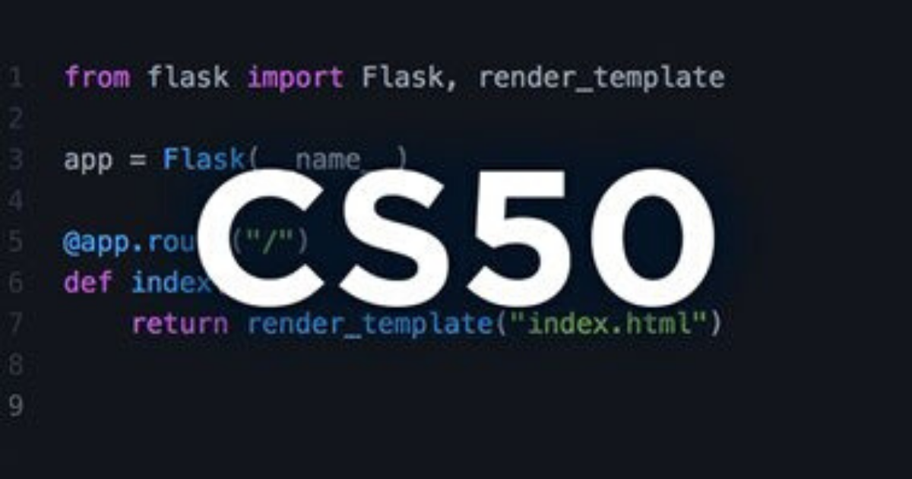

|
In this website it will feature different aspects of website making. It contains the About me, a background information of the developer of the website, the contact information of the developer, and lastly, the Interests of the developer. In my case, the topics that I will discuss in my Interests are Video Games, Computer Stuff and Cooking. |
|---|

I made this website to have apply the things I learned on CS50:
- How To Use GitHub as a form of repository and Version Tracker.
- How to use HTML.
- How to use CSS.
- And other web languages & programming languages that I can use to make my website more Responsive.